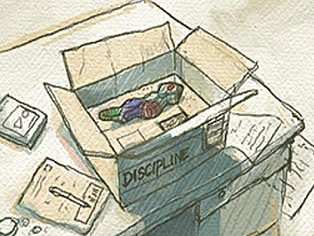
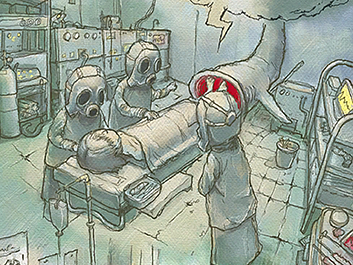

5
|
ストーリー |
 |

どこかの国。すこしだけ未来のはなし。
その国では治安の悪化に伴い犯罪受刑者が増加する一方であった。
既存の刑事収容施設はすでに飽和状態にあり、当局は次世代社会復帰支援施設の開発、運営を民間企業に委託した。業界最大手の保守安全サービス会社SRL社は究極の監視システムを搭載した移動要塞収容施設"ディシプリン"の開発に着手した。
SRL社は"ディシプリン"の正式稼働の前に、実施さながらの模擬運用試験を行うことにした。そうして集められた収容者の中に主人公のyouがいた。youは病を患う妹の治療にかかる莫大な手術代金を捻出するため“ディシプリン”模擬運用試験に参加したのだった。

試験開始当初は体験会然としたものだったが、他の収容者たちと対話が深まっていくにつれ、youはこの施設には別の目的があることをおぼろげながらに知っていく。そして手渡された特製コントローラーが語りはじめた。
「オレのケツを揉んで欲しい……。」
|
 |
 |
 |